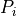
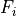

PyACTUp version 2.2.1¶
Note
The argument signatures of several common methods were changed in version 2.0. Existing models written for earlier versions of PyACTUp will need to be updated, typically by making relatively simple syntactic changes to the relevant calls. See Changes between versions 1.1.4 and 2.0 for details.
Introduction¶
PyACTUp is a lightweight Python implementation of a subset of the ACT-R [1] cognitive architecture’s Declarative Memory, suitable for incorporating into other Python models and applications. Its creation was inspired by the ACT-UP [2] cognitive modeling toolbox.
Typically PyACTUp is used by creating an experimental framework, or connecting to an existing experiment,
in the Python programming language, using one or more PyACTUp Memory objects. The framework
or experiment asks these Memory objects to add chunks to themselves, describing things learned, and
retrieves these chunks or values derived from them at later times. A chunk, a learned item, contains one or more
slots or attributes, describing what is learned. Retrievals are driven by matching on the values of these
attributes. Each Memory object also has a notion of time, a non-negative, real number that is advanced as
the Memory object is used. Time in PyACTUp is a dimensionless quantity whose interpretation depends upon
the model or system in which PyACTUp is being used. Note that in most cases the likelihood of retrievals does not depend
upon the actual scale of time used, only on the ratios of the various values, but subtle dependencies
can ensue when partial matching or other perturbations involving the activation rather than the probability
of retrieval are used.
There are also several parameters
controlling these retrievals that can be configured in a Memory object, and detailed information can
be extracted from it describing the process it uses in making these retrievals.
The frameworks or experiments may be strictly algorithmic, may interact with human
subjects, or may be embedded in web sites.
PyACTUp is a library, or module, of Python code, useful for creating Python programs; it is not a stand alone application. Some knowledge of Python programming is essential for using it.
PyACTUp is an ongoing project, and implements only a subset of ACT-R’s Declarative Memory. As it evolves it is possible that more of the ACT-R architecture will be incorporated into it. Such future additions may also change some of the APIs exposed today, and some work may be required to upgrade projects using the current version of PyACTUp to a later version.
Installing PyACTUp¶
The latest version of PyACTUp can be downloaded and installed from PyPi with pip:
pip install pyactup
Use of a virtual environment for Python, such as venv or Anaconda is recommended.
PyACTUp requires Python version 3.8 or later.
Note that PyACTUp is simply a Python module, a library, that is run as part of a larger Python program. To build and run models using PyACTUp you do need to do some Python programming. If you’re new to Python, a good place to start learning it is The Python Tutorial. To write and run a Python program you need to create and edit Python source files, and then run them. If you are comfortable using the command line, you can simply create and edit the files in your favorite text editor, and run them from the command line. Many folks, though, are happier using a graphical Integrated Development Environment (IDE). Many Python IDEs are available. One is IDLE, which comes packaged with Python itself, so if you installed Python you should have it available.
The PyACTUp sources are available at https://github.org/dfmorrison/pyactup/. This document is also available at http://koalemos.psy.cmu.edu/pyactup/.
Mailing List¶
There is a mailing list for those interested in PyACTUp and its development.
Background¶
Activation¶
A fundamental part of retrieving a chunk from a Memory object is computing the activation of that chunk,
a real number describing
how likely it is to be recalled, based on how frequently and recently it has been added to the Memory, and how well it
matches the specifications of what is to be retrieved.
The activation, of chunk i is a sum of three components,
the base-level activation, the activation noise, and the partial matching correction.
Base-level activation¶
The base-level activation, , describes the frequency and recency of the chunk i,
and depends upon the decay parameter of Memory, d. In the normal case, when the
Memory’s optimized_learning parameter is False, the base-level activation is computed using
the amount of time that has elapsed since each of the past appearances of i, which in the following
are denoted as the various .
If the Memory’s optimized_learning parameter is True an approximation is used instead, sometimes less taxing of
computational resources. It is particularly useful if the same chunks are expected to be seen many times, and assumes
that repeated experiences of the various chunks are distributed roughly evenly over time.
Instead of using the times of all the past occurrences of i, it uses L, the amount of time since
the first appearance of i, and n, a count of the number of times i has appeared.
The optimized_learning parameter may also be set to a positive integer. This specifies a number of most recent
reinforcements of a chunk to be used to compute the base-level activation in the normal way, with the contributions
of any older than those approximated using a formula similar to the preceding.
Note that setting the decay parameter to None disables the computation of base-level
activation. That is, the base-level component of the total activation is zero in this case.
This is different than setting the decay parameter to zero which still computes the
base level activation component, albeit using only frequency with no decay over time.
Activation noise¶
The activation noise, , implements the stochasticity of retrievals from Memory.
It is sampled from a logistic distribution centered on zero. A Memory object has a scale
parameter, noise, for this distribution. It is normally resampled each time the activation is computed.
For some esoteric purposes when a chunk’s activation is computed repeatedly at the same time it
may be desired to have all these same-time activations of a chunk use the same sample of activation noise.
While this is rarely needed, and best avoided unless absolutely necessary, when it is needed the fixed_noise
context manager can be used.
Note that setting the noise parameter to zero results in supplying
no noise to the activation. This does not quite make operation of
PyACTUp deterministic, since retrievals of chunks with the same
activations are resolved randomly.
Partial Matching¶
If the Memory’s mismatch parameter is None, the partial matching correction, , is zero.
Setting the parameter to None is equivalent to setting it to ∞, ensuring that only chunks
that exactly match the retrival specification are considered.
Otherwise depends upon the similarities of the attributes of the chunk to those attributes
being sought in the retrieval and the value of the mismatch parameter.
When considering chunks in partial retrievals or blending operations attributes for which no similarity
function has been defined are treated as exact matches; chunks not matching these attributes are not
included in the partial retrieval or blending operation.
PyACTUp normally uses a “natural” representation of similarities, where two values being completely similar, typically
Python ==,
has a value of one; and being completely dissimilar has a value of zero; with various other degrees of similarity being
positive, real numbers less than one. Traditionally ACT-R instead uses a range of
similarities with the most dissimilar being a negative number, usually -1, and completely similar being zero.
If preferred, PyACTUp can be configured to use these ACT-R-style similarities by setting
the use_actr_similarity attribute of a Memory object to True, resulting in the computations
below being appropriately offset.
The similarity method defines how to compute the similarity of values for a particular attribute when
it appears in a Memory’s chunks. A function is supplied to this method to be applied to values of the
attributes of given names, this function returning a similarity value. In addition, the similarity method
can assign a weight,  , to these slots, allowing the mismatch contributions of multiple slots
to be scaled with respect to one another. If not explicitly supplied this weight defaults to one.o
, to these slots, allowing the mismatch contributions of multiple slots
to be scaled with respect to one another. If not explicitly supplied this weight defaults to one.o
If the mismatch parameter has real value  , the similarity of slot k of i to the desired
value of that slot in the retrieval is , and the similarity weight of slot k is ,
the partial matching correction is
, the similarity of slot k of i to the desired
value of that slot in the retrieval is , and the similarity weight of slot k is ,
the partial matching correction is
The value of is normally positive, so  is normally negative, and increasing dissimilarities
reduce the total activation, scaled by the value of .
is normally negative, and increasing dissimilarities
reduce the total activation, scaled by the value of .
Blending¶
Besides retrieving an existing chunk, it is possible to retrieve an attribute value not present in any instance, a weighted average, or blend, of the corresponding attribute values present in a set of existing chunks meeting some criteria. Typically only real valued attributes are blended.
A parameter, the temperature, or , is used in constructing the blended value.
In PyACTUp the value of this parameter is by default the noise parameter used for activation noise,
multiplied by  . However it can be set independently of the
. However it can be set independently of the noise, if preferred.
If m is the set of chunks matching the criteria, and, for , the activation
of chunk i is  , we define a weight, , for the contribution i
makes to the blended value
, we define a weight, , for the contribution i
makes to the blended value
From these weights we compute a probability of retrieval, of chunk 

If is the value of the slot or attribute of chunk i to be blended over, the blended value, BV, is then
It is also possible to perform a discrete blending operation where an exisiting slot value is returned, albeit one possibly not appearing an any chunk that directly matches the criteria, it instead resulting from a blending operation using the same weights as above.
Instance Salience¶
When blending it is possible to create a measure of how relevant each chunk consulted
is to the final result, the instance salience. If is the value of the
output attribute in chunk  , then we compute a raw instance salience, ,
of chunk as
, then we compute a raw instance salience, ,
of chunk as
These are normalized to the instance salience values reported, , by dividing them by the Euclidean norm of the all the raw values
These normalized values are always between -1 and 1, inclusive.
Feature Salience¶
When blending it is possible to create a measure of how relevant each partially matched
slot in the chunks consulted is to the final result, the feature salience. For this
computation the first partial derivative of the similarity function with respect to
its first argument is needed. If is the similarity function for slot
, if is the desired value of this slot,
if is the value of this slot in chunk , and if
is the value of the output slot in this chunk, then
we compute a raw feature salience, , of chunk as
These are normalized to the feature salience values reported, , by dividing them by the Euclidean norm of the all the raw values
These normalized values are always between -1 and 1, inclusive.
API Reference¶
PyACTUp is a lightweight Python implementation of a subset of the ACT-R cognitive architecture’s Declarative Memory, suitable for incorporating into other Python models and applications. Its creation was inspired by the ACT-UP cognitive modeling toolbox.
Typically PyACTUp is used by creating an experimental framework, or connecting to an
existing experiment, in the Python programming language, using one or more PyACTUp
Memory objects. The framework or experiment asks these Memory objects to add
chunks to themselves, describing things learned, and retrieves these chunks or values
derived from them at later times. A chunk, a learned item, contains one or more slots or
attributes, describing what is learned. Retrievals are driven by matching on the values of
these attributes. Each Memory object also has a notion of time, a non-negative, real
number that is advanced as the Memory object is used. Time in PyACTUp is a dimensionless
quantity whose interpretation depends upon the model or system in which PyACTUp is being
used. There are also several parameters controlling these retrievals that can be
configured in a Memory object, and detailed information can be extracted from it
describing the process it uses in making these retrievals. The frameworks or experiments
may be strictly algorithmic, may interact with human subjects, or may be embedded in web
sites.
- class pyactup.Memory(noise=0.25, decay=0.5, temperature=None, threshold=None, mismatch=None, optimized_learning=False, use_actr_similarity=False, index=None)¶
A cognitive entity containing a collection of learned things, its chunks. A
Memoryobject also contains a current time, which can be queried as thetimeproperty.The number of distinct chunks a
Memorycontains can be determined with Python’s usuallen()function.A
Memoryhas several parameters controlling its behavior:noise,decay,temperature,threshold,mismatch, andoptimized_learning, anduse_actr_similarity. All can be queried and set as properties on theMemoryobject. When creating aMemoryobject their initial values can be supplied as parameters.A
Memoryobject can be serialized with pickle allowing Memory objects to be saved to and restored from persistent storage, so long as any similarity functions it contains are defined at the top level of a module usingdef. Note that attempts to pickle a Memory object containing a similarity function defined as a lambda function, or as an inner function, will cause anExceptionto be raised. And note further that pickle only includes the function name in the pickled object, not its definition. Also, if the contents of aMemoryobject are sufficiently complicated it may be necessary to raise Python’s recursion limit with sys.setrecusionlimit.A common use case for PyACTUp involves all of the chunks in a
Memoryhaving the same attributes, and some of those attributes are always used, by matching exactly, not partially, some of those attributes. Theindexkeyword argument declares that such a set of attributes is present, and can result in significant performance improvements for models with a very large number of chunks. The value of this keyword argument should be a list of attribute names. As a convenience, if none of the attribute names contain commas or spaces, a string maybe used instead of a list, the attribute names being separated by spaces or commas; either spaces or commas must be used, not a mixture. For example, bothindex="decision utility"andindex="decision,utiliy"are equivalent toindex=["decision", "utility"]. A list of he attributes in aMemory’s index can be retrieved with theindexproperty. If theMemoryis empty, containing no chunks, the index can be modified by setting that property, but otherwise the index cannot be changed after theMemorywas created. All chunks in aMemorywith an index must contain values for all the attributes listed in the index; if any are omitted in the argument tolearn()they will be automatically added with a value ofNone.If, when creating a
Memoryobject, any of the various parameters have unsupported values anExceptionwill be raised. See the documentation for the various properties that can be used for setting these parameters for further details about what values are or are not supported.- learn(slots, advance=None)¶
Adds, or reinforces, a chunk in this Memory with the attributes specified by slots. The attributes, or slots, of a chunk are described using the
Mappingslots, the keys of which must be non-empty strings and are the attribute names. All the values of the various slots must beHashable.Returns the chunk created if a new chunk has been created, and
Noneif instead an already existing chunk has been re-experienced and thus reinforced.Note that after learning one or more chunks, before
retrieve(),blend()or similar methods can be calledadvance()must be called, lest the chunk(s) learned have infinite activation. Because it is so common to calladvance()immediately afterlearn()as a convenience if advance is not None just beforelearn()returns it callsadvance()with advance as its argument, or without any argument if advance isTrue.Raises a
TypeErrorif an attempt is made to learn an attribute value that is notHashable. Raises aValueErrorif no slots are provided, or if any of the keys of slots are not non-empty strings.>>> m = Memory() >>> m.learn({"color":"red", "size":4}) <Chunk 0000 {'color': 'red', 'size': 4} 1> >>> m.advance() 1 >>> m.learn({"color":"blue", "size":4}, advance=1) <Chunk 0001 {'color': 'blue', 'size': 4} 1> >>> m.learn({"color":"red", "size":4}) is None True >>> m.advance() 3 >>> <Chunk 0000 {'color': 'red', 'size': 4} 2>
- retrieve(slots={}, partial=False, rehearse=False)¶
Returns the chunk matching the slots that has the highest activation greater than or equal to this Memory’s
threshold, if any. If there is no such matching chunk returnsNone. Normally only retrieves chunks exactly matching the slots; if partial isTrueit also retrieves those only approximately matching, using similarity (seesimilarity()) and the value ofmismatchto determine closeness of match.If rehearse is supplied and true it also reinforces this chunk at the current time. No chunk is reinforced if retrieve returns
None.The returned chunk is a dictionary-like object, and its attributes can be extracted with Python’s usual subscript notation.
If any matching chunks were created or reinforced at or after the current time an
Exceptionis raised.>>> m = Memory() >>> m.learn({"widget":"thromdibulator", "color":"red", "size":2}) <Chunk 0000 {'widget': 'thromdibulator', 'color': 'red', 'size': 2} 1> >>> m.advance() 1 >>> m.learn({"widget":"snackleizer", "color":"blue", "size":1}) <Chunk 0001 {'widget': 'snackleizer', 'color': 'blue', 'size': 1} 1> >>> m.advance() 2 >>> m.retrieve({"color":"blue"})["widget"] 'snackleizer'
- blend(outcome_attribute, slots={}, instance_salience=False, feature_salience=False)¶
Returns a blended value for the given attribute of those chunks matching slots, and which contain outcome_attribute, and have activations greater than or equal to this Memory’s threshold, if any. Returns
Noneif there are no matching chunks that contain outcome_attribute. If any matching chunk has a value of outcome_attribute that is not a real number anExceptionis raised.If neither
instance_saliencenorfeature_salienceis true, the sole return value is the blended value; otherwise a tuple of three values is returned. The first the blended value. Ifinstance_salienceis true the second is a dict mapping a descriptions of the slot values of each of the matched chunks that contributed to the blended value to the normalized instance salience value, a real number between -1 and 1, inclusive; otherwise the second value isNone. The slot representation of slot values in this dict is a tuple of tuples, the inner tuples being the slot name and value.If
feature_salienceis true the third value is a dict mapping slot names, corresponding to those slots that were partially matched in this blending operation, to their normalized feature salience values, a real number between -1 and 1, inclusive; otherwise the third value isNone. To compute feature salience a derivative of the similarity function must have been specified for every partially match slot usingsimilarity(); if any are missing aRuntimeError`is raised.>>> m = Memory() >>> m.learn({"color":"red", "size":2}) <Chunk 0000 {'color': 'red', 'size': 2} 1> >>> m.advance() 1 >>> m.learn({"color":"blue", "size":30}) <Chunk 0001 {'color': 'blue', 'size': 30} 1> >>> m.advance() 2 >>> m.learn({"color":"red", "size":1}) <Chunk 0002 {'color': 'red', 'size': 1} 1> >>> m.advance() 3 >>> m.blend("size", {"color":"red"}) 1.3660254037844388 >>> m.blend("size", {"color":"red"}, instance_salience=True) (1.3660254037844388, {(('color', 'red'), ('size', 2)): 0.7071067811865472, (('color', 'red'), ('size', 1)): -0.7071067811865478}, None)
- best_blend(outcome_attribute, iterable, select_attribute=None, minimize=False)¶
Returns two values (as a 2-tuple), describing the extreme blended value of the outcome_attribute over the values provided by iterable. The extreme value is normally the maximum, but can be made the minimum by setting minimize to
True. The iterable is anIterableofMappingobjects, mapping attribute names to values, suitable for passing as the slots argument toblend(). The first return value is the iterable value producing the best blended value, and the second is that blended value. If there is a tie, with two or more iterable values all producing the same, best blended value, then one of them is chosen randomly. If none of the values from iterable result in blended values of outcome_attribute then both return values areNone.This operation is particularly useful for building Instance Based Learning models.
For the common case where iterable iterates over only the values of a single slot the select_attribute parameter may be used to simplify the iteration. If select_attribute is supplied and is not
Nonethen iterable should produce values of that attribute instead ofMappingobjects. Similarly the first return value will be the attribute value rather than aMappingobject. The end of the example below demonstrates this.>>> m = Memory() >>> m.learn({"color":"red", "utility":1}) <Chunk 0000 {'color': 'red', 'utility': 1} 1> >>> m.advance() 1 >>> m.learn({"color":"blue", "utility":2}) <Chunk 0001 {'color': 'blue', 'utility': 2} 1> >>> m.advance() 2 >>> m.learn({"color":"red", "utility":1.8}) <Chunk 0002 {'color': 'red', 'utility': 1.8} 1> >>> m.advance() 3 >>> m.learn({"color":"blue", "utility":0.9}) <Chunk 0003 {'color': 'blue', 'utility': 0.9} 1> >>> m.advance() 4 >>> m.best_blend("utility", ({"color": c} for c in ("red", "blue"))) ({'color': 'blue'}, 1.5149259914576285) >>> m.learn({"color":"blue", "utility":-1}) <Chunk 0004 {'color': 'blue', 'utility': -1} 1> >>> m.advance() 5 >>> m.best_blend("utility", ("red", "blue"), "color") ('red', 1.060842632215651)
- discrete_blend(outcome_attribute, slots={})¶
Returns the value for the given attribute of those chunks matching slots, that maximizes the aggregate probabilities of retrieval of those chunks. Also returns a second value, a dictionary mapping the possible values of outcome_attribute to their probabilities of retrieval. Returns
Noneif there are no matching chunks that contain outcome_attribute.>>> m = Memory() >>> m.learn({"kind": "tilset", "age": "old"}) <Chunk 0000 {'kind': 'tilset', 'age': 'old'} 1> >>> m.advance() 1 >>> m.learn({"kind": "limburger", "age": "old"}) <Chunk 0001 {'kind': 'limburger', 'age': 'old'} 1> >>> m.advance() 2 >>> m.learn({"kind": "tilset", "age": "old"}) >>> m.advance() 3 >>> m.learn({"kind": "tilset", "age": "new"}) <Chunk 0002 {'kind': 'tilset', 'age': 'new'} 1> >>> m.advance() 4 >>> m.discrete_blend("kind", {"age": "old"}) ('tilset', {'tilset': 0.9540373563209859, 'limburger': 0.04596264367901423})
- reset(preserve_prepopulated=False, index=None)¶
Deletes this
Memory’s chunks and resets its time to zero. If preserve_prepopulated isFalseit deletes all chunks; if it isTrueit deletes all chunk references later than time zero, completely deleting those chunks that were created at a time greater than zero. If index is supplied it sets theMemory’s index to that value.
- time¶
This
Memory’s current time. Time in PyACTUp is a dimensionless quantity, the interpretation of which is at the discretion of the modeler. Attempting to set thetimeto anything but a real number raises aValueError.
- advance(amount=1)¶
Adds the given amount, which defaults to 1, to this Memory’s time, and returns the new, current time. Raises an
Exceptionif amount is neither a real number norNone.Warning
While amount can be negative, this is rarely appropriate. Backward time can easily result in biologically implausible models, and attempts to perform retrievals or similar operations at times preceding those at which relevant chunks were created or reinforced will result in infinite or complex valued base-level activations and raise an
Exception.
- noise¶
The amount of noise to add during chunk activation computation. This is typically a positive, floating point, number between about 0.2 and 0.8. It defaults to 0.25. If zero, no noise is added during activation computation. If an explicit
temperatureis not set, the value of noise is also used to compute a default temperature for blending computations. Attempting to setnoiseto a negative number raises aValueError.
- decay¶
Controls the rate at which activation for chunks in memory decay with the passage of time. Time in PyACTUp is dimensionless. The
decayis typically between about 0.1 and 2.0. The default value is 0.5. If set to zero then memory does not decay. If set toNoneno base-level activation is computed or used; note that this is significantly different than setting it to zero which causes base-level activation to still be computed and used, but with no decay. Attempting to set it to a negative number raises aValueError. If this memory’soptimized_learningparameter is true, thendecaymust be less than one.
- temperature¶
The temperature parameter used for blending values. If
None, the default, the square root of 2 times the value ofnoisewill be used. If the temperature is too close to zero, which can also happen if it isNoneand thenoiseis too low, aValueErroris raised.
- mismatch¶
The mismatch penalty applied to partially matching values when computing activations. If
Noneno partial matching is done. Otherwise any defined similarity functions (seesimilarity()) are called as necessary, and the resulting values are multiplied by the mismatch penalty and subtracted from the activation.Attributes for which no similarity function has been defined are always compared exactly, and chunks not matching on these attributes are not included at all in the corresponding partial retrievals or blending operations.
While for the likelihoods of retrieval the values of
timeare normally scale free, not depending upon the magnitudes oftime, but rather the ratios of various times, themismatchis sensitive to the actual magnitude. Suitable care should be exercised when adjusting it.Attempting to set this parameter to a value other than
Noneor a real number raises aValueError.
- threshold¶
The minimum activation value required for a retrieval. If
Nonethere is no minimum activation required. The default value isNone. Attempting to set thethresholdto a value that is neitherNonenor a real number raises aValueError.While for the likelihoods of retrieval the values of
timeare normally scale free, not depending upon the magnitudes oftime, but rather the ratios of various times, thethresholdis sensitive to the actual magnitude, and thus the units in which time is measured. Suitable care should be exercised when adjusting it.
- optimized_learning¶
Whether or not this Memory is configured to use the optimized learning approximation. If
False, the default, optimized learning is not used. IfTrueis is used for all cases. If a positive integer, that number of the most recent rehearsals of a chunk are used exactly, with any older rehearsals having their contributions to the activation approximated.Attempting to set a value other than the above raises an
Exception.Optimized learning can only be used if the
decayis less than one. Attempting to set this parameter toTrueor an integer whendecayis one or greater raises aValueError.The value of this attribute can only be changed when the
Memoryobject does not contain any chunks, typically immediately after it is created orreset(). Otherwise aRuntimeErroris raised.Warning
Care should be taken when using optimized learning as operations such as
retrievethat depend upon activation may no longer raise an exception if they are called whenadvancehas not been called afterlearn, possibly producing biologically implausible results.
- extra_activation¶
A tuple of callables that are called to add additional terms to the activations of chunks.
For advanced purposes it is sometimes useful to add additional terms to chunks’ activation computations, for example for implementing a constant base level offset for one or more chunks, or for implementing spreading activation. This property can be set to None (or another falsey value) meaning no such additional activation is added to any chunks; this is the default. Otherwise it should be set to an iterable of callables, each of which should take a single argument, a chunk, and returns a real number. For convenience it may also be set to a single callable, which is equivalent to setting it to a tuple of length one containing that callable.
Attempting to set a value that is not a callable, an iterable of callables or falsey raises an
RuntimeErrorwill be raised when it is used in computing activations.Warning
The use of extra_activation requires care lest biologically implausible models result. In addition to the ease with which artificial adjustments to the activations can be made with this method, the appropriate magnitudes of activation values depend upon the units in which time is measured.
- similarity(attributes, function=None, weight=None, derivative=None)¶
Assigns a similarity function and/or corresponding weight to be used when comparing attribute values with the given attributes. The attributes should be an
Iterableof strings, attribute names. The function should take two arguments, and return a real number between 0 and 1, inclusive. The function should be commutative; that is, if called with the same arguments in the reverse order, it should return the same value. It should also be stateless, always returning the same values if passed the same arguments. No error is raised if either of these constraints is violated, but the results will, in most cases, be meaningless if they are. IfTrueis supplied as the function a default similarity function is used that returns one if its two arguments are==and zero otherwise.If derivative is supplied it should be a callable, the first partial derivative of the similarity function with respect to its first argument, and will be used if the feature saliences are requested in
blend(). The derivative must be defined for all values that may occur for the relevant slots. It is common that the strict mathematical derivative may not exists for one or a small number of possibly values, most commonly when the similarly involves the absolute value of the difference between the two arguments of the similarly function. Even in these cases the argument tosimilarity()should return a value; often zero is a good choice in these cases.If only one or two of function, weight and derivatve are supplied, they changed without changing those not supplied; the initial defaults are
Truefor function,1for weight, andNonefor derivative. If none of*function*, weight nor derivative are supplied all are removed, and these attributes will no longer have an associated similarity computation, and will be matched only exactly.As a convenience, if none of the attribute names contains commas or spaces, a string may be used instead of a list as the first argument to
similarity, the attribute names being separated by spaces or commas; either spaces or commas must be used, not a mixture. For example, both"decision utility"and"decision,utiliy"are equivalent to["decision", "utility"].An
Exceptionis raised if any of the elements of attributes are not non-zero length strings, if function is neithercallablenorTrue, of if weight is not a positive, real number.Note that for a
Memoryto be successfully pickled all the similarity functions should be defined at top level, and be neither lambda expressions nor inner functions. Pickled objects include only the names of functions, and not their function definitions.>>> def f(x, y): ... if y < x: ... return f(y, x) ... return 1 - (y - x) / y >>> similarity(["length", "width"], f, weight=2)
- print_chunks(file=<_io.TextIOWrapper name='<stdout>' mode='w' encoding='utf-8'>, pretty=True)¶
Prints descriptions of all the
Chunkobjects contained in thisMemory. The descriptions are printed to file, which defaults to the standard output. If file is not an open text file it should be a string naming a file to be opened for writing.If pretty is true, the default, a format intended for reading by humans is used. Otherwise comma separated values (CSV) format, more suitable for importing into spreadsheets, numpy, and the like, is used.
If this
Memoryis empty, not yet containing any chunks, nothing is printed, and no file is created.Warning
The
print_chunks()method is intended as a debugging aid, and generally is not suitable for use as a part of a model.
- activation_history¶
A
MutableSequence, typically alist, into which details of the computations underlying PyACTUp operation are appended. IfNone, the default, no such details are collected. In addition to activation computations, the resulting retrieval probabilities are also collected for blending operations. The details collected are presented as dictionaries. As a convenience settingactivation_historytoTrueassigns a fresh, empty list as its value.If PyACTUp is being used in a loop, the details collected will likely become voluminous. It is usually best to clear them frequently, such as on each iteration.
Attempting to set
activation_historyto anything butNone,Trueor aMutableSequenceraises aValueError.>>> m = Memory() >>> m.learn({"color": "red", "size": 3}) <Chunk 0005 {'color': 'red', 'size': 3} 1> >>> m.advance() 1 >>> m.learn({"color": "red", "size": 5}) <Chunk 0006 {'color': 'red', 'size': 5} 1> >>> m.advance() 2 >>> m.activation_history = [] >>> m.blend("size", {"color": "red"}) 4.810539051819914 >>> pprint(m.activation_history, sort_dicts=False) [{'time': 2, 'name': '0005', 'creation_time': 0, 'attributes': (('color', 'red'), ('size', 3)), 'reference_count': 1, 'references': [0], 'base_level_activation': -0.3465735902799726, 'activation_noise': -0.032318983984613185, 'activation': -0.3788925742645858, 'retrieval_probability': 0.09473047409004302}, {'time': 2, 'name': '0006', 'creation_time': 1, 'attributes': (('color', 'red'), ('size', 5)), 'reference_count': 1, 'references': [1], 'base_level_activation': 0.0, 'activation_noise': 0.4191470689622754, 'activation': 0.4191470689622754, 'retrieval_probability': 0.905269525909957}]
- forget(slots, when)¶
Undoes the operation of a previous call to
learn().Warning
Normally this method should not be used. It does not correspond to a biologically plausible process, and is only provided for esoteric purposes.
The slots should be those supplied for the
learn()operation to be undone, and when should be the time that was current when the operation was performed. ReturnsTrueif it successfully undoes such an operation, andFalseotherwise.This method cannot be used with
optimized_learning, and calling it when optimized learning is enabled raises aRuntimeError.
- current_time¶
A context manager used to allow reverting to the current time after advancing it and simiulating retrievals or similar operations in the future.
Warning
It is rarely appropriate to use
current_time. When it is used, care should be taken to avoid creating biologically implausible models. Also, learning within acurrent_timecontext will typically lead to tears as having chunks created or reinforced in the future results in failures of attempts to retrieve them.>>> m = Memory(temperature=1, noise=0) >>> m.learn({"size": 1}) <Chunk 0000 {'size': 1} 1> >>> m.advance(10) 10 >>> m.learn({"size": 10}) <Chunk 0001 {'size': 10} 1> >>> m.advance() 11 >>> m.blend("size") 7.9150376886801395 >>> with m.current_time as t: ... m.advance(10_000) ... m.blend("size") ... (t, m.time) ... 10011 5.501124325474942 (11, 10011) >>> m.time 11
- fixed_noise¶
A context manager used to force multiple activations of a given chunk at the same time to use the same activation noise.
Warning
Use of
fixed_noiseis rarely appropriate, and easily leads to biologically implausible results. It is provided only for esoteric purposes. When its use is required it should be wrapped around the smallest fragment of code practical.>>> m = Memory() >>> m.learn({"color": "red"}) <Chunk 0000 {'color': 'red'} 1> >>> m.advance() 1 >>> m.activation_history = [] >>> m.retrieve() <Chunk 0000 {'color': 'red'}> >>> m.retrieve() <Chunk 0000 {'color': 'red'}> >>> pprint(m.activation_history, sort_dicts=False) [{'name': '0000', 'creation_time': 0, 'attributes': (('color', 'red'),), 'references': (0,), 'base_activation': 0.0, 'activation_noise': 0.07779212346913301, 'activation': 0.07779212346913301}, {'name': '0000', 'creation_time': 0, 'attributes': (('color', 'red'),), 'references': (0,), 'base_activation': 0.0, 'activation_noise': -0.015345110792246082, 'activation': -0.015345110792246082}] >>> m.activation_history = [] >>> with m.fixed_noise: ... m.retrieve() ... m.retrieve() ... <Chunk 0000 {'color': 'red'}> <Chunk 0000 {'color': 'red'}> >>> pprint(m.activation_history, sort_dicts=False) [{'name': '0000', 'creation_time': 0, 'attributes': (('color', 'red'),), 'references': (0,), 'base_activation': 0.0, 'activation_noise': 0.8614281690342627, 'activation': 0.8614281690342627}, {'name': '0000', 'creation_time': 0, 'attributes': (('color', 'red'),), 'references': (0,), 'base_activation': 0.0, 'activation_noise': 0.8614281690342627, 'activation': 0.8614281690342627}]
- use_actr_similarity¶
Whether similarity computations for this
Memoryuse “natural” similarity values or traditional ACT-R ones. PyACTUp normally uses a “natural” representation of similarities, where two values being completely similar, identical, has a value of one; and being completely dissimilar has a value of zero; with various other degrees of similarity being positive, real numbers less than one. Traditionally ACT-R instead uses a range of similarities with the most dissimilar being a negative number, usually -1, and completely similar being zero. If the value of thisuse_actr_similarityis falsey, the default, natural similarities are used, and otherwise the tradional ACT-R ones.
- class pyactup.Chunk(memory, content)¶
A learned item.
A chunk acts much like a dictionary, and its slots can be retrieved with the usual [] notation, or with .get().
Examples¶
Rock, paper, scissors¶
This is an example of using PyACTUp to model the Rock, Paper, Scissors game. Both players are modeled, and attempt to chose their moves based on their expectations of the move that will be made by their opponents. The two players differ in how much of the prior history they consider in creating their expectations.
1# Rock, paper, scissors example using pyactup
2
3import pyactup
4import random
5
6DEFAULT_ROUNDS = 100
7MOVES = ["paper", "rock", "scissors"]
8N_MOVES = len(MOVES)
9
10m = pyactup.Memory(noise=0.1)
11
12def defeat_expectation(**kwargs):
13 # Generate expectation matching supplied conditions and play the move that defeats.
14 # If no expectation can be generate, chooses a move randomly.
15 expectation = (m.retrieve(kwargs) or {}).get("move")
16 if expectation:
17 return MOVES[(MOVES.index(expectation) - 1) % N_MOVES]
18 else:
19 return random.choice(MOVES)
20
21def safe_element(list, i):
22 try:
23 return list[i]
24 except IndexError:
25 return None
26
27def main(rounds=DEFAULT_ROUNDS):
28 # Plays multiple rounds of r/p/s of a lag 1 player (player1) versus a
29 # lag 2 player (player2).
30 plays1 = []
31 plays2 = []
32 score = 0
33 for r in range(rounds):
34 move1 = defeat_expectation(player="player2",
35 ultimate=safe_element(plays2, -1))
36 move2 = defeat_expectation(player="player1",
37 ultimate=safe_element(plays1, -1),
38 penultimate=safe_element(plays1, -2))
39 winner = (MOVES.index(move2) - MOVES.index(move1) + N_MOVES) % N_MOVES
40 score += -1 if winner == 2 else winner
41 print("Round {:3d}\tPlayer 1: {:8s}\tPlayer 2: {:8s}\tWinner: {}\tScore: {:4d}".format(
42 r, move1, move2, winner, score))
43 m.learn({"player": "player1",
44 "ultimate": safe_element(plays1, -1),
45 "penultimate": safe_element(plays1, -2),
46 "move": move1})
47 m.learn({"player": "player2",
48 "ultimate": safe_element(plays2, -1),
49 "move": move2},
50 advance=2)
51 plays1.append(move1)
52 plays2.append(move2)
53
54
55if __name__ == '__main__':
56 main()
Here’s the result of running it once. Because the model is stochastic, if you run it yourself the results will be different.
$ python rps.py
Round 0 Player 1: rock Player 2: scissors Winner: 1 Score: 1
Round 1 Player 1: rock Player 2: scissors Winner: 1 Score: 2
Round 2 Player 1: rock Player 2: rock Winner: 0 Score: 2
Round 3 Player 1: scissors Player 2: paper Winner: 1 Score: 3
Round 4 Player 1: rock Player 2: scissors Winner: 1 Score: 4
Round 5 Player 1: paper Player 2: paper Winner: 0 Score: 4
Round 6 Player 1: rock Player 2: scissors Winner: 1 Score: 5
Round 7 Player 1: scissors Player 2: paper Winner: 1 Score: 6
Round 8 Player 1: rock Player 2: paper Winner: 2 Score: 5
Round 9 Player 1: rock Player 2: scissors Winner: 1 Score: 6
Round 10 Player 1: scissors Player 2: rock Winner: 2 Score: 5
Round 11 Player 1: scissors Player 2: paper Winner: 1 Score: 6
Round 12 Player 1: rock Player 2: scissors Winner: 1 Score: 7
Round 13 Player 1: paper Player 2: paper Winner: 0 Score: 7
Round 14 Player 1: rock Player 2: paper Winner: 2 Score: 6
Round 15 Player 1: scissors Player 2: rock Winner: 2 Score: 5
Round 16 Player 1: scissors Player 2: paper Winner: 1 Score: 6
Round 17 Player 1: rock Player 2: paper Winner: 2 Score: 5
Round 18 Player 1: scissors Player 2: scissors Winner: 0 Score: 5
Round 19 Player 1: scissors Player 2: rock Winner: 2 Score: 4
Round 20 Player 1: scissors Player 2: paper Winner: 1 Score: 5
Round 21 Player 1: rock Player 2: paper Winner: 2 Score: 4
Round 22 Player 1: scissors Player 2: scissors Winner: 0 Score: 4
Round 23 Player 1: paper Player 2: rock Winner: 1 Score: 5
Round 24 Player 1: scissors Player 2: rock Winner: 2 Score: 4
Round 25 Player 1: scissors Player 2: scissors Winner: 0 Score: 4
Round 26 Player 1: paper Player 2: paper Winner: 0 Score: 4
Round 27 Player 1: scissors Player 2: rock Winner: 2 Score: 3
Round 28 Player 1: scissors Player 2: rock Winner: 2 Score: 2
Round 29 Player 1: paper Player 2: paper Winner: 0 Score: 2
Round 30 Player 1: rock Player 2: rock Winner: 0 Score: 2
Round 31 Player 1: scissors Player 2: rock Winner: 2 Score: 1
Round 32 Player 1: paper Player 2: rock Winner: 1 Score: 2
Round 33 Player 1: paper Player 2: rock Winner: 1 Score: 3
Round 34 Player 1: paper Player 2: rock Winner: 1 Score: 4
Round 35 Player 1: paper Player 2: scissors Winner: 2 Score: 3
Round 36 Player 1: scissors Player 2: scissors Winner: 0 Score: 3
Round 37 Player 1: rock Player 2: rock Winner: 0 Score: 3
Round 38 Player 1: paper Player 2: rock Winner: 1 Score: 4
Round 39 Player 1: paper Player 2: paper Winner: 0 Score: 4
Round 40 Player 1: rock Player 2: scissors Winner: 1 Score: 5
Round 41 Player 1: paper Player 2: rock Winner: 1 Score: 6
Round 42 Player 1: paper Player 2: scissors Winner: 2 Score: 5
Round 43 Player 1: paper Player 2: scissors Winner: 2 Score: 4
Round 44 Player 1: rock Player 2: scissors Winner: 1 Score: 5
Round 45 Player 1: rock Player 2: scissors Winner: 1 Score: 6
Round 46 Player 1: rock Player 2: rock Winner: 0 Score: 6
Round 47 Player 1: paper Player 2: paper Winner: 0 Score: 6
Round 48 Player 1: rock Player 2: scissors Winner: 1 Score: 7
Round 49 Player 1: paper Player 2: rock Winner: 1 Score: 8
Round 50 Player 1: scissors Player 2: paper Winner: 1 Score: 9
Round 51 Player 1: rock Player 2: rock Winner: 0 Score: 9
Round 52 Player 1: scissors Player 2: scissors Winner: 0 Score: 9
Round 53 Player 1: paper Player 2: rock Winner: 1 Score: 10
Round 54 Player 1: scissors Player 2: rock Winner: 2 Score: 9
Round 55 Player 1: paper Player 2: paper Winner: 0 Score: 9
Round 56 Player 1: rock Player 2: rock Winner: 0 Score: 9
Round 57 Player 1: scissors Player 2: scissors Winner: 0 Score: 9
Round 58 Player 1: paper Player 2: scissors Winner: 2 Score: 8
Round 59 Player 1: rock Player 2: rock Winner: 0 Score: 8
Round 60 Player 1: scissors Player 2: rock Winner: 2 Score: 7
Round 61 Player 1: scissors Player 2: scissors Winner: 0 Score: 7
Round 62 Player 1: paper Player 2: paper Winner: 0 Score: 7
Round 63 Player 1: rock Player 2: paper Winner: 2 Score: 6
Round 64 Player 1: scissors Player 2: rock Winner: 2 Score: 5
Round 65 Player 1: paper Player 2: rock Winner: 1 Score: 6
Round 66 Player 1: paper Player 2: paper Winner: 0 Score: 6
Round 67 Player 1: paper Player 2: scissors Winner: 2 Score: 5
Round 68 Player 1: paper Player 2: scissors Winner: 2 Score: 4
Round 69 Player 1: rock Player 2: scissors Winner: 1 Score: 5
Round 70 Player 1: rock Player 2: rock Winner: 0 Score: 5
Round 71 Player 1: scissors Player 2: paper Winner: 1 Score: 6
Round 72 Player 1: rock Player 2: scissors Winner: 1 Score: 7
Round 73 Player 1: rock Player 2: rock Winner: 0 Score: 7
Round 74 Player 1: scissors Player 2: rock Winner: 2 Score: 6
Round 75 Player 1: scissors Player 2: scissors Winner: 0 Score: 6
Round 76 Player 1: paper Player 2: scissors Winner: 2 Score: 5
Round 77 Player 1: paper Player 2: paper Winner: 0 Score: 5
Round 78 Player 1: rock Player 2: scissors Winner: 1 Score: 6
Round 79 Player 1: paper Player 2: rock Winner: 1 Score: 7
Round 80 Player 1: scissors Player 2: paper Winner: 1 Score: 8
Round 81 Player 1: rock Player 2: paper Winner: 2 Score: 7
Round 82 Player 1: rock Player 2: rock Winner: 0 Score: 7
Round 83 Player 1: scissors Player 2: rock Winner: 2 Score: 6
Round 84 Player 1: paper Player 2: rock Winner: 1 Score: 7
Round 85 Player 1: paper Player 2: paper Winner: 0 Score: 7
Round 86 Player 1: rock Player 2: scissors Winner: 1 Score: 8
Round 87 Player 1: paper Player 2: rock Winner: 1 Score: 9
Round 88 Player 1: scissors Player 2: rock Winner: 2 Score: 8
Round 89 Player 1: paper Player 2: paper Winner: 0 Score: 8
Round 90 Player 1: rock Player 2: scissors Winner: 1 Score: 9
Round 91 Player 1: paper Player 2: scissors Winner: 2 Score: 8
Round 92 Player 1: paper Player 2: rock Winner: 1 Score: 9
Round 93 Player 1: scissors Player 2: paper Winner: 1 Score: 10
Round 94 Player 1: rock Player 2: scissors Winner: 1 Score: 11
Round 95 Player 1: rock Player 2: paper Winner: 2 Score: 10
Round 96 Player 1: rock Player 2: rock Winner: 0 Score: 10
Round 97 Player 1: scissors Player 2: paper Winner: 1 Score: 11
Round 98 Player 1: rock Player 2: scissors Winner: 1 Score: 12
Round 99 Player 1: paper Player 2: paper Winner: 0 Score: 12
Safe, risky¶
This is an example of using PyACTUp to create an Instance Based Learning (IBL) [3] model of a binary choice task, exhibiting risk aversion. A choice is made between two options, one safe and the other risky. The safe choice always pays out one unit. The risky choice is random, paying out three units one third of the time and zero units the rest. In this example code the choice is made by each virtual participant over the course of 60 rounds, learning from the experience of previous rounds. The results are collected over 10,000 independent participants, and the number of risky choices at each round, averaged over all participants, is plotted.
This code uses two other Python packages, matplotlib
and tqdm.
Neither is actually used by the model proper, and the code can be rearranged to dispense with
them, if preferred. Matplotlib is used to draw a graph of the results, and tqdm
to display a progress indicator, as this example takes on the order of a minute to run
in CPython.
1import pyactup
2import random
3
4import matplotlib.pyplot as plt
5
6from tqdm import tqdm
7
8PARTICIPANTS = 10_000
9ROUNDS = 60
10
11risky_chosen = [0] * ROUNDS
12m = pyactup.Memory()
13for p in tqdm(range(PARTICIPANTS)):
14 m.reset()
15 # prepopulate some instances to ensure initial exploration
16 for c, o in (("safe", 1), ("risky", 0), ("risky", 2)):
17 m.learn({"choice": c, "outcome": o})
18 m.advance()
19 for r in range(ROUNDS):
20 choice, bv = m.best_blend("outcome", ("safe", "risky"), "choice")
21 if choice == "risky":
22 payoff = 3 if random.random() < 1/3 else 0
23 risky_chosen[r] += 1
24 else:
25 payoff = 1
26 m.learn({"choice": choice, "outcome": payoff})
27 m.advance()
28
29plt.plot(range(ROUNDS), [ v / PARTICIPANTS for v in risky_chosen])
30plt.ylim([0, 1])
31plt.ylabel("fraction choosing risky")
32plt.xlabel("round")
33plt.title(f"Safe (1 always) versus risky (3 × ⅓, 0 × ⅔)\nσ={m.noise}, d={m.decay}")
34plt.show()
The result of running this is
Changes to PyACTUp¶
Changes between versions 2.2 and 2.2.1¶
Updated copyright notices.
Changes between versions 2.1.1 and 2.2¶
Added salience computations.
The activation_history now includes similarity values for attributes partially matched.
Changes between versions 2.1 and 2.1.1¶
The Memory object containing a chunk can now be retrieved with the public property .memory.
Documentation improvements.
Changes between versions 2.0.11 and 2.1¶
Added the new property extra_activation.
Added additional information to the activation_history
The index is now a tuple instead of a list.
Made some minor improvements to the documentation.
Changes between versions 2.0.2 and 2.0.11¶
Adjusted copyrights and documentation.
Fixed a bug when attempting to partially match with a mismatch parameter of zero.
Changes between versions 2.0 and 2.0.2¶
The canonical home for PyACTUp is now on GitHub instead of Bitbucket.
Changes between versions 1.1.4 and 2.0¶
PyACTUp now requires Python 3.8 or later.
Changed the arguments to learn(), forget(), retrieve() and blend().
There is now a new discrete_blend() method.
Similarity functions are now per-memory, and are set using the similarity() method, there no longer being a set_similarity_function() function.
Similarities can now have weights, also set with the similarity() method.
The optimized_learning parameter can now be set like other parameters, and there is no longer an optimized_learning parameter to the reset() method.
The optimized_learning parameter can now take positive integers as its value, allowing a mixture of normal and approximate activation computations.
There is no longer any auto-advancing before learn() and/or after retrieve() or blend(); while auto-advancing slightly simplified trivial demonstration models, it invariably caused difficulties with real models, and sowed confusion. As an intermediate measure there is still an advance= keyword argument available in learn().
Some operations have been significantly speeded up for models with many chunks and/or rehearsals of those chunks, particularly if the new index argument to Memory() is used.
General tidying and minor bug fixes.
When upgrading existing 1.x models to version 2.0 or later some syntactic changes will nearly always have to be made,
in particular to calls to learn(), retrieve() and blend(). What in 1.x were expressed (mis)using keyword
arguments are now passed as a single argument, typically a dictionary. In most cases this simply requires wrapping
curly braces around the relevant arguments, quote marks around the attribute/slot names, and replacing the equals
signs by colons. If real keyword arguments, such as advance=, are used they should all be moved after the dictionary.
Note that it is now no longer necessary to avoid using Python keywords or possible keyword arguments of the various
methods as attribute names. And this change also allows sensible extension of the PyACTUp API by adding further keyword
arguments to the relevant methods.
If you are using partial matching you will also have to replace calls to set_similarity_function() by
the similarity() method of Memory objects. This method also takes slightly different arguments than
the former function.
Also since auto-advance is no longer done, explict calls to advance() (or additions of advance= to learn()) may need to be added at appropriate points in older code.
For example, what in 1.x would have been expressed as
set_similarity_function(cubic_similarity, "weight", "volume")
m.learn(color="red", size=4)
x = m.retrieve(color="blue")
bv = m.blend("size“, color="green")
might become in 2.0
m.similarity(["weight", "volume"], cubic_similarity)
m.learn({"color": "red", "size": 4})
m.advance()
x = m.retrieve({"color": "blue"})
bv = m.blend("size", {"color": "green"})
Changes between versions 1.1.3 and 1.1.4¶
Changed the underlying representation of chunks and now use numpy to compute base activations, speeding up some models.
Added chunks attribute and print_chunks() method.
Changes between versions 1.0.9 and 1.1.3¶
Added current_time and fixed_noise conext managers.
PyACTUp now requires Python version 3.7 or later.
Changes between versions 1.0 and 1.0.9¶
Allow disabling base-level activation.
Cache similarity computations.
Add rehearse parameter to retrieve() method.
Add best_blend() method.
Add preserve_prepopulated argument to reset().